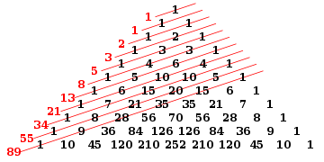

#include <stdio.h>
int main()
{
int n, reversedInteger = 0, remainder, originalInteger;
printf("Enter an integer: ");
scanf("%d", &n);
originalInteger = n;
// reversed integer is stored in variable
while( n!=0 )
{
remainder = n%10;
reversedInteger = reversedInteger*10 + remainder;
n /= 10;
}
// palindrome if orignalInteger and reversedInteger are equal
if (originalInteger == reversedInteger)
printf("%d is a palindrome.", originalInteger);
else
printf("%d is not a palindrome.", originalInteger);
return 0;
}
The Fibonacci Sequence is the series of numbers:
0, 1, 1, 2, 3, 5, 8, 13, 21, 34, ...
The next number is found by adding up the two numbers before it.
The 2 is found by adding the two numbers before it (1+1).
The 3 is found by adding the two numbers before it (1+2).
And the 5 is (2+3).
and so on!

#include <stdio.h>
int main()
{
int i, n, t1 = 0, t2 = 1, nextTerm;
printf("Enter the number of terms: ");
scanf("%d", &n);
printf("Fibonacci Series: ");
for (i = 1; i <= n; ++i)
{
printf("%d, ", t1);
nextTerm = t1 + t2;
t1 = t2;
t2 = nextTerm;
}
return 0;
}#include <stdio.h>
int main()
{
int n, i;
unsigned long long factorial = 1;
printf("Enter an integer: ");
scanf("%d",&n);
// show error if the user enters a negative integer
if (n < 0)
printf("Error! Factorial of a negative number doesn't exist.");
else
{
for(i=1; i<=n; ++i)
{
factorial *= i; // factorial = factorial*i;
}
printf("Factorial of %d = %llu", n, factorial);
}
return 0;
}#include <stdio.h>
void swap(int *xp, int *yp)
{
int temp = *xp;
*xp = *yp;
*yp = temp;
}
// A function to implement bubble sort
void bubbleSort(int arr[], int n)
{
int i, j;
for (i = 0; i < n-1; i++)
// Last i elements are already in place
for (j = 0; j < n-i-1; j++)
if (arr[j] > arr[j+1])
swap(&arr[j], &arr[j+1]);
}
/* Function to print an array */
void printArray(int arr[], int size)
{
int i;
for (i=0; i < size; i++)
printf("%d ", arr[i]);
printf("n");
}
// Driver program to test above functions
int main()
{
int arr[] = {64, 34, 25, 12, 22, 11, 90};
int n = sizeof(arr)/sizeof(arr[0]);
bubbleSort(arr, n);
printf("Sorted array: \n");
printArray(arr, n);
return 0;
}
#include <stdio.h>
void thirdLargest(int arr[], int arr_size)
{
/* There should be atleast three elements */
if (arr_size < 3)
{
printf(" Invalid Input ");
return;
}
// Initialize first, second and third Largest element
int first = arr[0], second = INT_MIN, third = INT_MIN;
// Traverse array elements to find the third Largest
for (int i = 1; i < arr_size ; i ++)
{
/* If current element is greater than first,
then update first, second and third */
if (arr[i] > first)
{
third = second;
second = first;
first = arr[i];
}
/* If arr[i] is in between first and second */
else if (arr[i] > second)
{
third = second;
second = arr[i];
}
/* If arr[i] is in between second and third */
else if (arr[i] > third)
third = arr[i];
}
printf("The third Largest element is %d\n", third);
}
/* Driver program to test above function */
int main()
{
int arr[] = {12, 13, 1, 10, 34, 16};
int n = sizeof(arr)/sizeof(arr[0]);
thirdLargest(arr, n);
return 0;
}